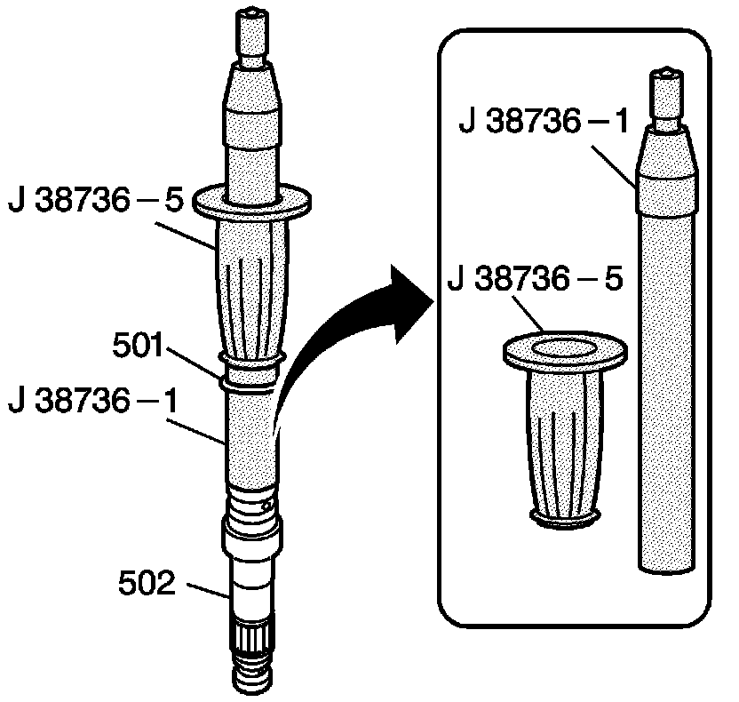
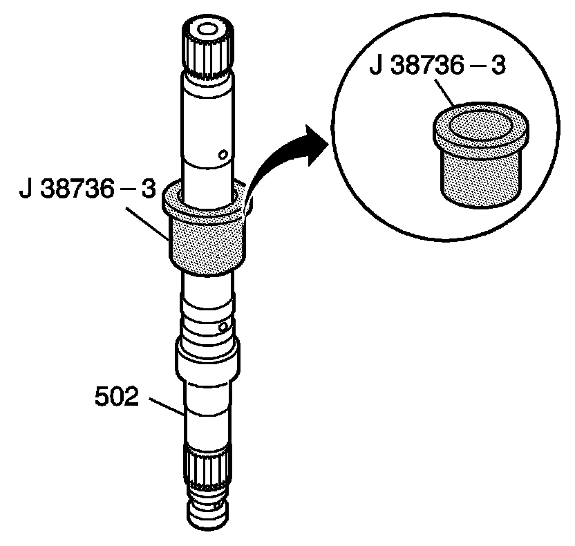
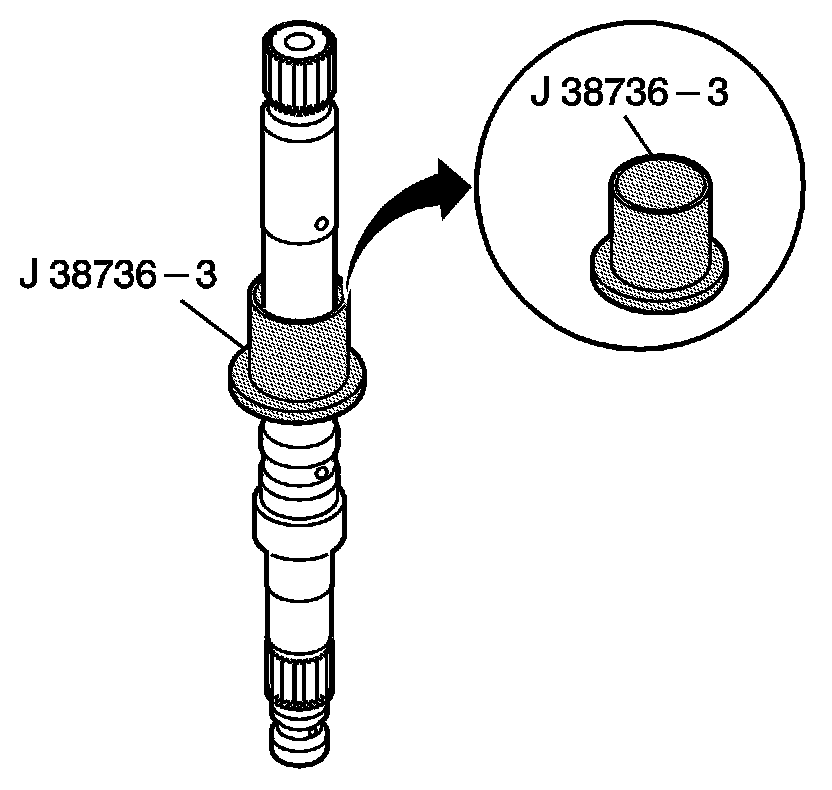
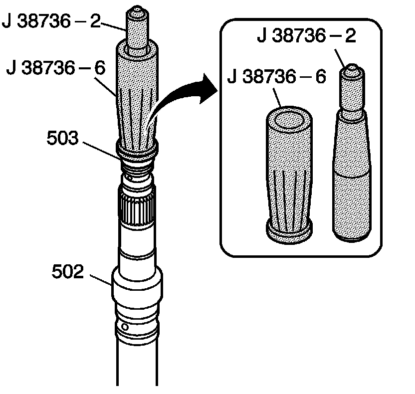
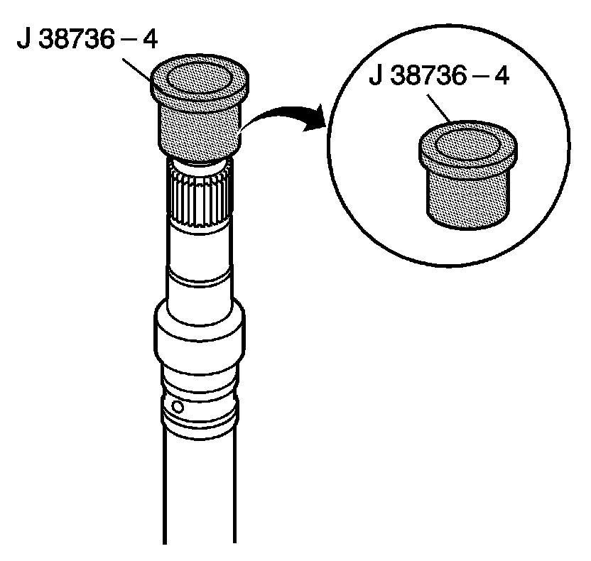
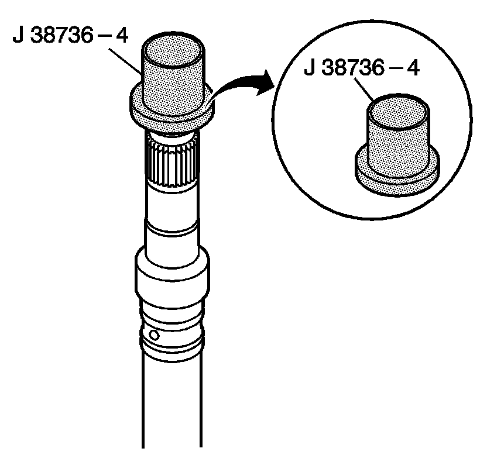

Turbine Shaft Assemble
Turbine Shaft Assemble
Tools Required
^ J 38736-1 Turbine Shaft Seal Installer
^ J 38736-2 Turbine Shaft Seal Installer
^ J 38736-3 Turbine Shaft Seal Sizer
^ J 38736-4 Turbine Shaft Seal Sizer
^ J 38736-5 Turbine Shaft Seal Pusher
^ J 38736-6 Turbine Shaft Seal Pusher

1. Place the J 38736-1 onto the turbine shaft (502).
2. Set the J 38736-1 to position #1.
3. Using the J 38736-5, install the lower turbine shaft intermediate oil seal ring (501).
4. Remove the tools.

Important: Be sure to use the small chamfered end of the J 38736-3 in order to size the lower turbine shaft intermediate oil seal ring. Then use the larger chamfered end of the J 38736-3 in order to size the upper turbine shaft intermediate oil seal ring.
5. With the small chamfered end down, place the J 38736-3 over the lower turbine shaft intermediate oil seal ring.
6. Leave the J 38736-3 on the turbine shaft intermediate oil seal ring for at least 1 minute in order to allow the seal ring to become the proper size.
7. Place the J 38736-1 onto the turbine shaft (502).
8. Set the J 38736-1 to position #2.
9. Using the J 38736-5, install the upper turbine shaft intermediate oil seal ring (501).
10. Remove the tools.

11. With the large chamfered end down, place the J 38736-3 over the turbine shaft intermediate oil seal ring.
12. Leave the J 38736-3 on the turbine shaft intermediate oil seal ring for at least 1 minute to allow the seal ring to become the proper size.

13. Turn the turbine shaft (502) over.
14. Place the J 38736-2 onto the turbine shaft.
15. Set the J 38736-2 to position #1.
16. Using the J 38736-6, install the lower turbine shaft rear oil seal ring (503).
17. Remove the tools.

Important: Be sure to use the small chamfered end of the J 38736-4 in order to size the lower turbine shaft rear oil seal ring. Then use the larger chamfered end of the J 38736-4 in order to size the upper turbine shaft rear oil seal ring.
18. With the small chamfered end down, place the J 38736-4 over the lower turbine shaft rear oil seal ring.
19. Leave the J 38736-4 on the turbine shaft rear oil seal ring for at least 1 minute in order to allow the seal ring to become the proper size.
20. Place the J 38736-2 onto the turbine shaft (502).
21. Set the J 38736-2 to position #2.
22. Using the J 38736-6, install the upper turbine shaft rear oil seal ring (503).
23. Remove the tools.

24. With the large chamfered end down, place the J 38736-4 over the turbine shaft rear oil seal ring.
25. Leave the J 38736-4 on the turbine shaft rear oil seal ring for at least 1 minute in order to allow the seal ring to become the proper size.